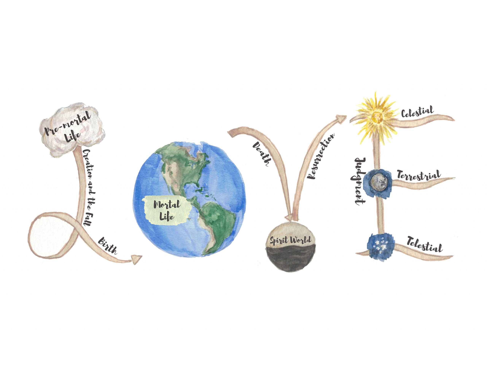
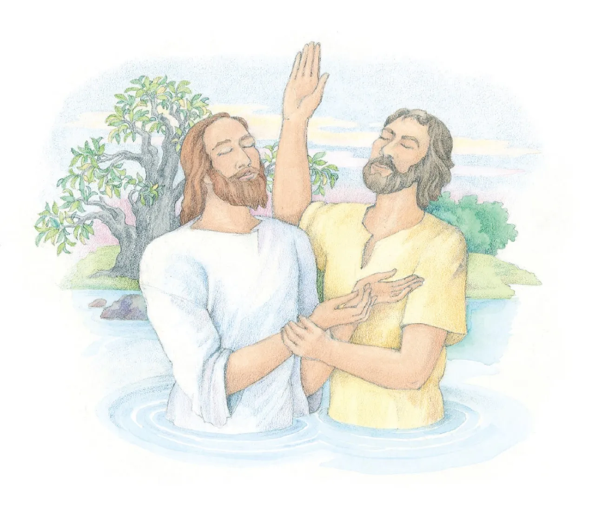

- The Message of the Restoration of the Gospel of Jesus Christ
-
The First Lesson:
- God is Our Loving Heavenly Father
- Propehts
- Jesus Christ's Life on Earth
- Apostacy
- Joseph Smith and the Restoration
- Book of Mormon

-
The First Lesson:
-
The Plan of Salvation:
-
The Second Lesson:
- Premortal Life
- Creation
- The Fall of Adam and Eve
- Our Life on Earth
- The Atonement of Jesus Christ
- The Spirit World
- The Resurrection, Salvation, and Exaltation
- Judgement and Kingdoms of Glory

-
The Second Lesson:
-
The Gospel of Jesus Christ:
-
The Third Lesson:
- Faith in Jesus Christ
- Repentance
- Baptism by Immersion for the Remission of Sins
- Receiving the Gift of the Holy Ghost
- Enduring to the End

-
The Third Lesson:
-
Becoming Lifelong Disciples of Jesus Christ
-
The Fourth Lesson:
- Pray Often
- Study the Scriptures
- The Two Great Commandments
- Follow the Prophet
- Keep the Ten Commandments
- Keeping the Sabbath Day Holy
- Living the Law of Chastity
- Obey the Word of Wisdom
- Obey and Honor the Law
- Keep the Law of Tithing
- Service
- Sharing the Gospel
- Fasting and Fast Offerings
- Priesthood and Church Organizations
- Marriage and Families
- Temple and Family History Work for Deceased Ancestors
- Temples, the Endowment, Eternal Marriage, and Eternal Families
 00" />
00" />
-
The Fourth Lesson:
- My Mission in Pittsburgh, Pennsylvania
- I served there March 2024-August 2024
- The Areas I Served in:
- Slippery Rock
- My Mission in Spain
- I served there from August 2024-August 2025
-
The Areas I Served in:
- Carabanchel
- Mostoles
- Burgos
- Las Palmas de Gran Canaria
Watch Joseph Smith's First Vision:
Check out this live Tableau dashboard about The Church of Jesus Christ of Latter-day Saints!